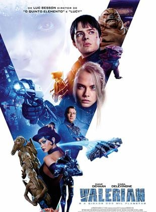
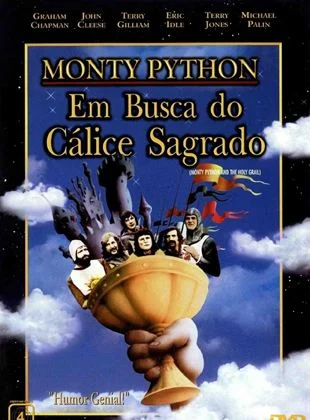

LOCADORA FILMES

Gente Grande

Descrição:
Em Gente Grande, Lenny, Kurt, Eric, Marcus e Rob se conhecem desde pequenos. Passados trinta
anos,
os cinco
amigos se reencontram para curtir um fim de semana juntos com as respectivas famílias, mas o
feriado
de 4 de
Julho em uma casa no lago promete muito mais diversão do que apenas lembranças dos bons
momentos.
Valerian e a Cidade dos Mil Planetas
Descrição: Século XXVIII. Valérian é um agente viajante do tempo e do espaço que luta ao lado da parceira Laureline, por quem é apaixonado, em defesa da Terra e seus planetas aliados, continuamente atacados por bandidos intergaláticos.
Cidade de Deus

Descrição:
Dadinho (Douglas Silva) e Buscapé são grandes amigos, que cresceram juntos imersos em um
universo de
muita
violência. Na Cidade de Deus, favela carioca conhecida por ser um dos locais mais violentos do
Rio de
Janeiro,
os
caminhos das duas crianças divergem, quando um se esforça para se tornar um fotógrafo e o outro
o chefe
do
tráfico.
10 Coisas que Eu Odeio em Você

Descrição: A situação está tensa na casa dos Stratford. Bianca (Larisa Oleynik) não vê a hora de arranjar um namorado, mas seu pai (Larry Miller) não permite que ela saia com garotos. Após muita insistência, o pai toma uma resolução: Bianca pode namorar, desde que sua irmã, Katharina (Julia Stiles), namore também. O Rei Arthur (Graham Chapman) está à procura de cavaleiros que possam acompanhá-lo em uma importante jornada: a busca do Santo Graal.
Monty Python em Busca do Cálice Sagrado
Descrição: O Rei Arthur (Graham Chapman) está à procura de cavaleiros que possam acompanhá-lo em uma importante jornada: a busca do Santo Graal.